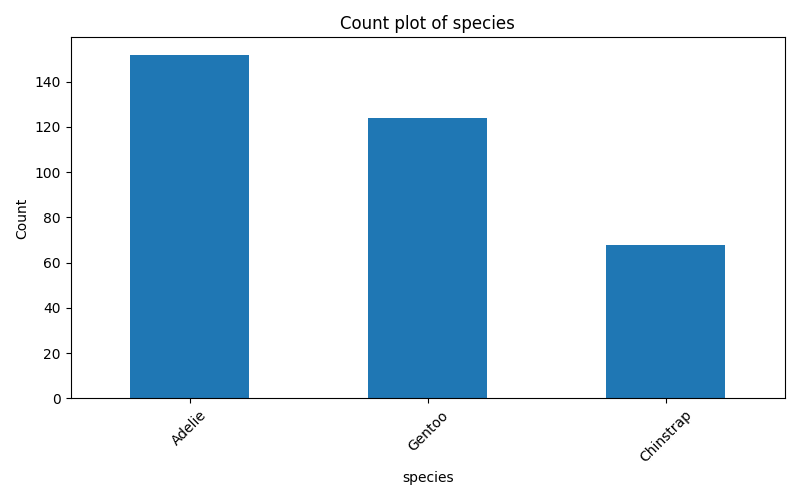
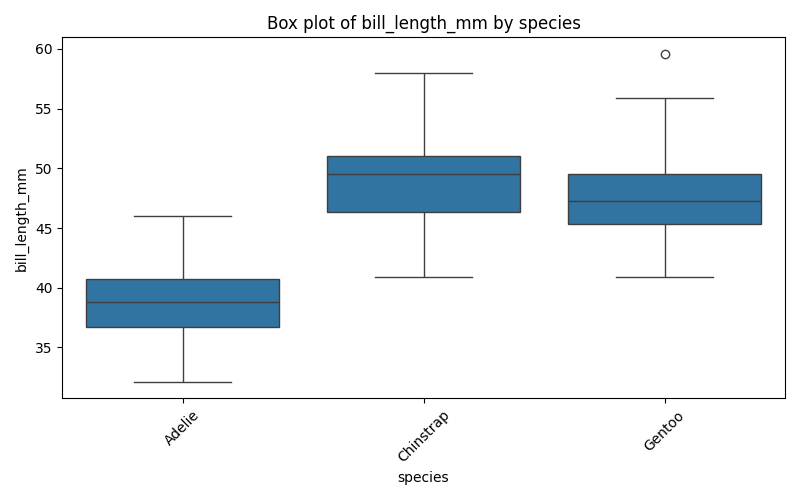
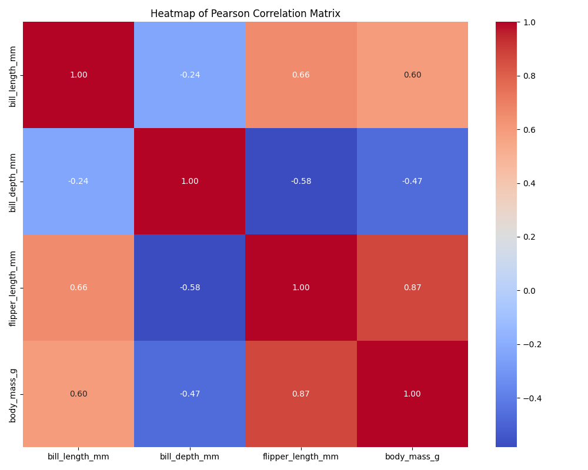

Reporte Final: Observatorio de Datos (Penguins)
Reporte reproducible construido a partir de los artifacts generados por el runner en las fases OBSERVE, DESCRIBE y HYPOTHESIZE_AND_CONCLUDE.
Resumen Ejecutivo
El dataset contiene 344 filas y 7 columnas. Se identificaron 4 variables numericas y 3 variables categoricas. No se detectaron filas duplicadas. Se registraron valores faltantes en cuatro columnas numericas y en sex. La evidencia descriptiva documenta resúmenes numericos, conteos categoricos, una tabla cruzada entre species e island, matrices de correlacion de Pearson y Spearman, y un conjunto compacto de visualizaciones.
Las hipotesis documentadas son: asociacion entre flipper_length_mm y body_mass_g, diferencia de bill_length_mm entre especies, y asociacion entre species e island. Las pruebas registradas incluyen Pearson, Spearman, ANOVA, Kruskal y Chi-square.
Fuentes: 00_raw_profile.json, 04_descriptive_stats.json, 06_hypotheses_log.json, 08_tests.json.
1. Observacion Inicial
Esquema
Numericas: bill_length_mm, bill_depth_mm, flipper_length_mm, body_mass_g
Categoricas: species, island, sex
Valores faltantes
| Variable | Faltantes |
|---|---|
| species | 0 |
| island | 0 |
| bill_length_mm | 2 |
| bill_depth_mm | 2 |
| flipper_length_mm | 2 |
| body_mass_g | 2 |
| sex | 11 |
Fuente: 00_raw_profile.json
2. Descripcion del Dataset
Resumen numerico
| Variable | Mean | Median | Std | IQR |
|---|---|---|---|---|
| bill_length_mm | 43.9219 | 44.45 | 5.4596 | 9.2750 |
| bill_depth_mm | 17.1512 | 17.3 | 1.9748 | 3.1000 |
| flipper_length_mm | 200.9152 | 197.0 | 14.0617 | 23.0 |
| body_mass_g | 4201.7544 | 4050.0 | 801.9545 | 1200.0 |
Resumen categorico
| Variable | Categoria | Count | Percentage |
|---|---|---|---|
| species | Adelie | 152 | 44.19 |
| species | Gentoo | 124 | 36.05 |
| species | Chinstrap | 68 | 19.77 |
| island | Biscoe | 168 | 48.84 |
| island | Dream | 124 | 36.05 |
| island | Torgersen | 52 | 15.12 |
| sex | MALE | 168 | 48.84 |
| sex | FEMALE | 165 | 47.97 |
| sex | <MISSING> | 11 | 3.20 |
Asociaciones descriptivas
La asociacion numerica mas fuerte registrada aparece entre flipper_length_mm y body_mass_g.
| Metodo | Par | Coeficiente |
|---|---|---|
| Pearson | flipper_length_mm / body_mass_g | 0.8712 |
| Spearman | flipper_length_mm / body_mass_g | 0.8400 |
La tabla cruzada documentada entre species e island muestra una asociacion categórica relevante para posteriores pruebas.
Fuente: 04_descriptive_stats.json
3. Visualizaciones

species. Fuente: 05_visual_registry.json.
bill_length_mm por species. Fuente: 05_visual_registry.json.
05_visual_registry.json.El registro visual actual incluye count plots para species, island y sex; histogramas para las cuatro variables numericas; boxplots por especie; y un heatmap de correlacion de Pearson.
Fuente: 05_visual_registry.json
4. Hipotesis
flipper_length_mmis associated withbody_mass_g.bill_length_mmdiffers acrossspecies.speciesis associated withisland.
Fuente: 06_hypotheses_log.json
5. Pruebas Estadisticas
| Test | Variables | Statistic | p-value | Extra |
|---|---|---|---|---|
| Pearson | flipper_length_mm / body_mass_g | 0.8712017673060113 | 4.3706809630004724e-107 | n = 342 |
| Spearman | flipper_length_mm / body_mass_g | 0.8399741230312999 | 2.763218997179657e-92 | n = 342 |
| ANOVA | bill_length_mm by species | 410.6002550405077 | 2.6946137388895495e-91 | n_groups = 3 |
| Kruskal | bill_length_mm by species | 244.13671803364164 | 9.691371997194331e-54 | n_groups = 3 |
| Chi-square | species / island | 299.55032743148195 | 1.3545738297192517e-63 | dof = 4 |
Fuente: 08_tests.json
6. Conclusiones
Hallazgos descriptivos
- Hay hallazgos descriptivos disponibles para variables numericas, resumenes categoricos y la tabla cruzada
species-island.
Patrones visuales
- El registro visual actual incluye count plots, histogramas, boxplots y un heatmap de correlacion de Pearson.
Proximas hipotesis a probar
- Probar la asociacion entre
flipper_length_mmybody_mass_gcon Pearson y Spearman. - Probar si
bill_length_mmdifiere entre especies con ANOVA y Kruskal. - Probar la asociacion entre
specieseislandcon Chi-square.
Fuente: 07_conclusions.json
7. Preguntas para el Investigador
- Como deben tratarse las filas con valores faltantes de
sexen analisis estratificados. - Si debe aplicarse complete-case handling u otra regla de preprocesamiento antes de pruebas con variables numericas.
Fuente: 09_questions.json
8. Artifacts Utilizados
00_raw_profile.json04_descriptive_stats.json05_visual_registry.json06_hypotheses_log.json07_conclusions.json08_tests.json09_questions.json
Reporte generado a partir de artifacts reproducibles del workflow con agente y runner.